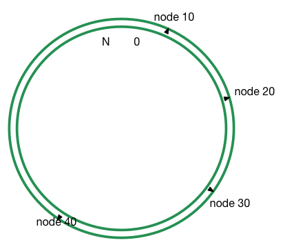
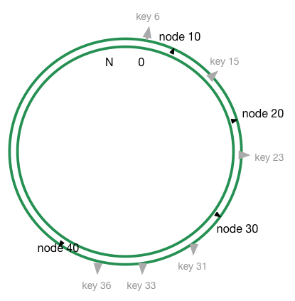
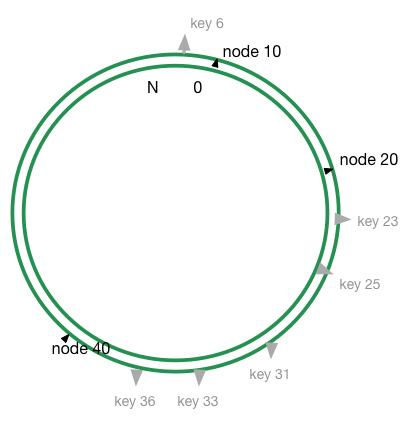
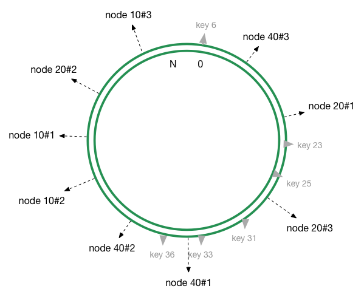

一致性哈希，顾名思义，是一种哈希算法。比较常用的哈希算法应该是取模，通常在数据库需要分库的时候，大家都会用取模哈希。但是取模有一个缺点，就是，就是增加或者删除一个槽位的时候，几乎需要对所有的关键字进行重新映射，而分库的时候用这种方法，则所有的数据都需要重新录入。
在我们做分布式缓存的时候，我们需要把对 A 的请求，映射到某一个节点 node_a，如果是取模来做哈希，假设我们是资源 6，集群中有4个几点，取4的模为，则资源缓存到 node_2。如果我们向集群中添加一台设备，则需要取5的模，资源6会缓存到 node_1。实际上如果用取模来做哈希，无论是增加还是删除节点，都是灾难性的。大部分数据都需要重新映射，集群内的内容也需要重新缓存。这种情况下请求则会击穿缓存，请求到数据库，给数据库带来很大的压力。这种情况下，我们会需要一致性哈希。
David Karger及其合作者列出了使得一致哈希在互联网分布式缓存中非常有用的几个特性：
- 冗余少
- 负载均衡
- 过渡平滑
- 存储均衡
- 关键词单调
一致性哈希最基础的想法是对所有的对象都使用相同的函数来映射缓存。这样可以尽可能的将同一个资源映射到同一个节点上面。这种情况下，无论是增加还是移出一个节点，都只会影响其相邻的节点，而其他的节点不受影响，这样最大程度的保证了缓存的有效性，将副作用降到了最低。
详解
原理
一致性哈希梓潼来说非常简单，你可以认为这是一个从0到一个更大的数字构成的环。给你一个任意节点 A，通过一个 hash 函数，你可以将节点 A 放在环的某一个位置。如下图所示：
然后再给你一个对象15，通过相同的 hash 函数对 15 进行计算，则可以得到在环上得到相应的位置 key 15。
如上图所示，key 15被缓存到顺时针遇见的第一个节点，即 node20节点上。其他对象 key6，key23，key40则分别缓存到各自遇见的第一个节点，node10，node30，node40。一个节点缓存了自己与上一个节点之间的所有数据。 这种缓存方式下，如果节点20被删除，则 key15呗映射到 node30，如果 node30与与 node40之间增加了一个节点 node35，则 key31，key33都被重新映射到 node35，其他的对象映射不需要改变。
虚拟节点
利用上面的方法可以说基本上已经足够了，但是有一个问题：我们对节点和对象进行哈希运算的时候，如果节点数过少，有可能会出现节点直接不均匀的情况出现。这样可能的大多数对象都映射到同一个节点上，如下图所示：
这样大部分数据都映射到 node40上，并不能够做到均衡，从而导致数据倾斜。为了解决这个问题，引入了虚拟节点的机制。即新增同一个缓存设备的时候，会对这个设备进行多次哈希计算，从而产生多个节点。用上面的栗子，我们可以对每个节点进行三次哈希计算，环上则有9个节点20#1 #2 #3， 10#1 #2 #3， 40#1 #2 #3：
在实际的生产环境中，我们可以对同一设备进行更多次哈希，这样数据分布会接近于平均分布。
Python 实现
代码来做与 Python 的 hash_ring库：
import md5 class HashRing(object): def __init__(self, nodes=None, replicas=3): """Manages a hash ring. `nodes` is a list of objects that have a proper __str__ representation. `replicas` indicates how many virtual points should be used pr. node, replicas are required to improve the distribution. """ self.replicas = replicas self.ring = dict() self._sorted_keys = [] if nodes: for node in nodes: self.add_node(node) def add_node(self, node): """Adds a `node` to the hash ring (including a number of replicas). """ for i in xrange(0, self.replicas): key = self.gen_key('%s:%s' % (node, i)) self.ring[key] = node self._sorted_keys.append(key) self._sorted_keys.sort() def remove_node(self, node): """Removes `node` from the hash ring and its replicas. """ for i in xrange(0, self.replicas): key = self.gen_key('%s:%s' % (node, i)) del self.ring[key] self._sorted_keys.remove(key) def get_node(self, string_key): """Given a string key a corresponding node in the hash ring is returned. If the hash ring is empty, `None` is returned. """ return self.get_node_pos(string_key)[0] def get_node_pos(self, string_key): """Given a string key a corresponding node in the hash ring is returned along with it's position in the ring. If the hash ring is empty, (`None`, `None`) is returned. """ if not self.ring: return None, None key = self.gen_key(string_key) nodes = self._sorted_keys for i in xrange(0, len(nodes)): node = nodes[i] if key <= node: return self.ring[node], i return self.ring[nodes[0]], 0 def get_nodes(self, string_key): """Given a string key it returns the nodes as a generator that can hold the key. The generator is never ending and iterates through the ring starting at the correct position. """ if not self.ring: yield None, None node, pos = self.get_node_pos(string_key) for key in self._sorted_keys[pos:]: yield self.ring[key] while True: for key in self._sorted_keys: yield self.ring[key] def gen_key(self, key): """Given a string key it returns a long value, this long value represents a place on the hash ring. md5 is currently used because it mixes well. """ m = md5.new() m.update(key) return long(m.hexdigest(), 16)